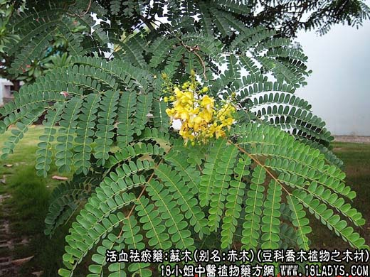

原文出处:本文转载自中药大全网。
原文连接:https://www.daquan.com/post/2008.html
原文连接:https://www.daquan.com/post/2008.html

_苏木的功效与作用1.png)
【中药概述】
苏木，别名：苏枋、苏方、苏方木、棕木、赤木、红柴、红苏木、落文树，为豆科乔木植物苏木的木材。甘、咸，平。归心、肝、脾经。
祛瘀通经：用于血滞经闭，产后瘀痛，常与当归，赤芍，红花等配伍；跌打伤痛，如（医宗金鉴<八厘散>）。
【药物形态】
本品呈长圆柱形或对剖半圆柱形，长10～100cm，直径3～12cm。表面黄红色至棕红色，具刀削痕．常见纵向裂缝。质坚硬。断面略具光泽，年轮明显，有的可见暗棕色、质松、带亮星的髓部。气微，味微涩。
【药效鉴别】苏木为治外伤要药，行瘀止痛作用良好，其功能与刘寄奴相近，但作用较强。用于妇科，少量和血，用稍大则破血。
【药理作用】对金黄色葡萄球菌、肺炎双球菌，白喉、伤寒、副伤寒、痢疾杆菌和肺炎球菌等有明显的抑制作用。
【化学成分】含苏木素、苏木酚、挥发油等。
【用量用法】5——18g，水煎服，或入剂。外用适量。
【注】苏木寄生。甘苦，凉。归心、肝、脾经。活血散瘀，通经活络，消肿止痛，降血脂。
除非注明，文章解释权均归中药大全所有，欢迎转载！转载请注明本文地址，谢谢。本文地址： https://www.daquan.com/post/2008.html